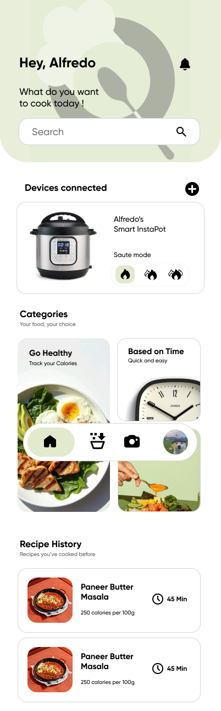
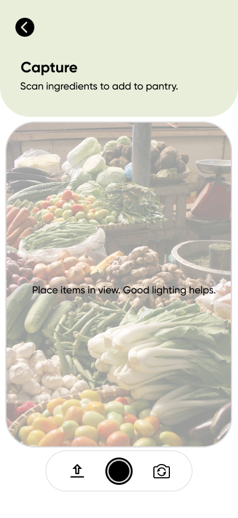
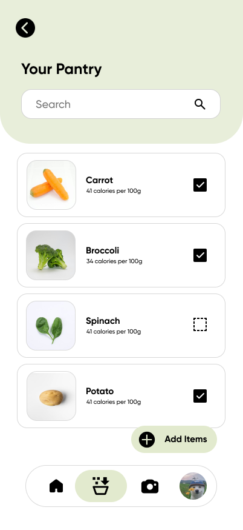
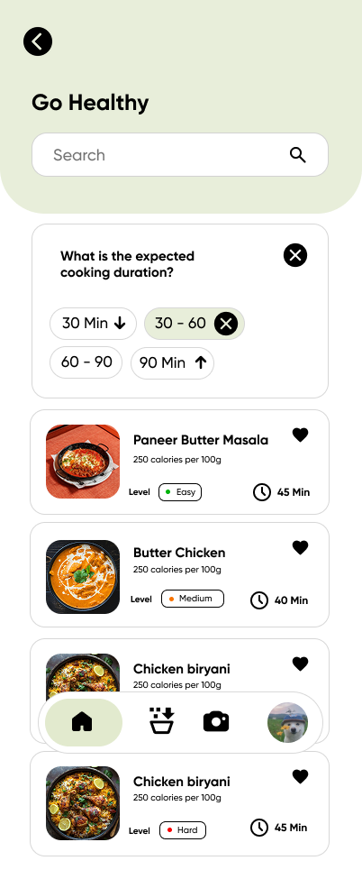
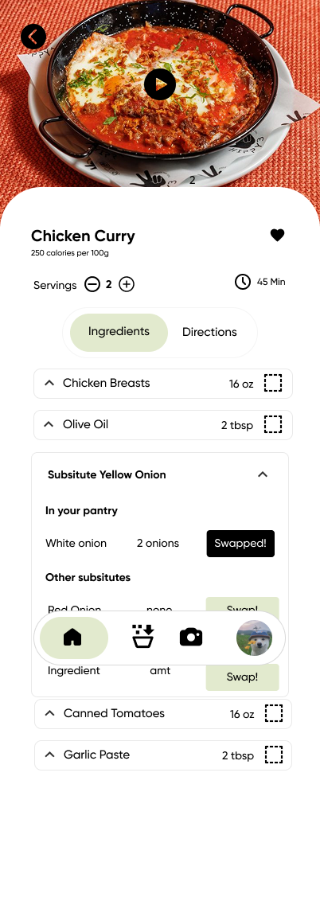
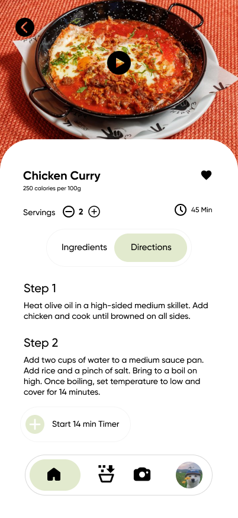
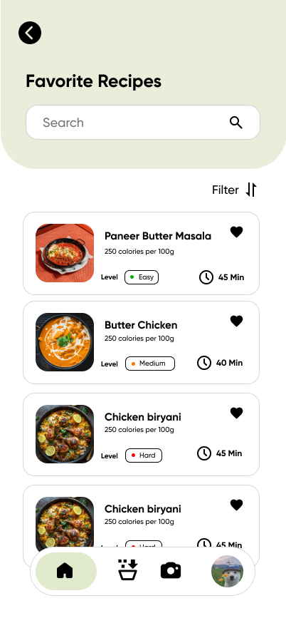

Role
Product Design · Mobile App
QCook
A mobile cooking assistant designed to reduce the mental load of everyday cooking. QCook helps beginner and intermediate home cooks decide what to make using ingredients they already have.

Project Type
Mobile cooking assistant
Audience
Beginner and intermediate home cooks
Timeline
Jan 2026 - Mar 2026
Overview
Cooking becomes easier when the app starts with what users already have.
QCook supports people who want to cook at home but feel stuck deciding what to make, how to use leftover ingredients, or how to follow recipes that assume too much cooking knowledge.
The app helps users capture ingredients, organize a digital pantry, receive relevant recipe suggestions, review substitutions, and follow cooking steps without leaving the recipe flow.
Problem Space
Beginner cooks face decision overload before they even start cooking.
Planning
What should I cook?
Users often open recipe sites without knowing what they can realistically make with what they already have.
Ingredients
What can I use?
Recipes may require unfamiliar ingredients or ignore leftovers already sitting in the user’s fridge or pantry.
Confidence
How do I cook this?
Beginner cooks need guidance for prep, substitutions, timing, and cooking techniques without jumping across multiple apps.
Persona
Meet Al, a beginner cook who wants dinner without another grocery run.
Alfredo has just started cooking and finds the entire process stressful. He searches for recipes online, but they often assume skills he does not have, require ingredients he has never heard of, and do not help him use leftovers efficiently.
His goal is simple: make something healthy with what he already has, while getting clear step-by-step support.
Key Features
QCook turns ingredients into a guided cooking path.
Ingredient Capture
Users scan ingredients with their phone camera and add detected items to their pantry.
Pantry Management
Captured ingredients are organized in a digital pantry so users can track what is available.
Recipe Suggestions
The app recommends recipes based on available pantry ingredients and user filters.
Guided Cooking
Recipe review, substitutions, and technique videos support users while they cook.
Mobile Flow
The main experience is built around quick phone-based decisions.

Step 01
Capture ingredients
Al scans ingredients in his fridge so the app can detect and add them to the pantry.

Step 02
Confirm pantry items
After confirming detected items, Al sees a clear message that ingredients were added successfully.

Step 03
Filter recipe suggestions
He filters by goal and cooking duration, then sees recipe options based on his pantry.

Step 04
Review substitutions
When Al is missing yogurt, the substitution panel gives alternatives and quantities.

Step 05
Cook with embedded guidance
Technique videos and step-by-step directions help him stay inside the recipe flow.

Step 06
Save recipes for later
After finishing the dish, Al saves the recipe and feels more confident cooking again.
Style Guide
Soft colors and simple typography keep the app approachable.
Soft pastel tones were chosen to create a calm, approachable interface. The palette avoids harsh saturation so beginner cooks can stay focused and comfortable while using the app.
The app uses a bold display style for headings and darker text on light backgrounds for readability.
Testing Updates
User testing pushed the prototype toward clearer navigation and simpler screens.
Navigation
Clearer flow
Improve how users move from pantry to recipe suggestions and cooking mode.
Icons
Improved clarity
Make important actions such as camera capture, favorites, and filters easier to recognize.
Screens
Less visual load
Simplify screen layouts so beginner cooks can focus on one decision at a time.
Guidance
More support while cooking
Keep prep, substitutions, and technique help close to the recipe flow.
Outcome
QCook reduces everyday cooking friction by connecting pantry, recipes, and guidance.
The final prototype gives users a clearer path from “what do I have?” to “what can I cook?” Instead of starting with endless recipe search, QCook starts with the user’s real pantry and supports decisions along the way.
01
Less meal-planning stress
02
Better use of existing ingredients
03
More support for beginner cooks
04
Mobile-first cooking flow
Reflection
Designing QCook meant reducing decisions, not adding more features.
The strongest part of QCook is the way it connects pantry awareness, recipe discovery, and cooking guidance into one flow. For beginner cooks, the app needs to remove uncertainty instead of overwhelming them with endless options.
My main contribution was helping shape the interface direction, visual presentation, and prototype story so the app could clearly communicate how it supports beginner cooking decisions.
If I continued this project, I would run more hands-on usability testing inside real kitchen contexts and refine the camera capture, substitutions, and cooking mode around actual cooking behavior.